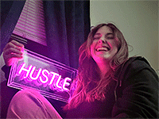

Corinne Brammer's Portfolio for AENG 110 class |
||
| Home Bookmark Project Photo Project Video Project | ||
|

Student at Millersville University |
Hello. My name is Corinne Brammer I am a sophomore and an OSEH major for occupational safety and environmental health. When I graduate, I would like to work as a safety professional. I am originally from Massachusetts but live in Blue Bell PA and would love to find work close by. Only as of recently did I figure out that I wanted to pursue a career as a safety professional. Originally, I thought I wanted a job that works with kids as I work as a camp counselor over the summer. Dealing with little kid injuries all the time lead me to realize I could do more by preventing injury. |
Home Bookmark Project Photo Project Video Project |